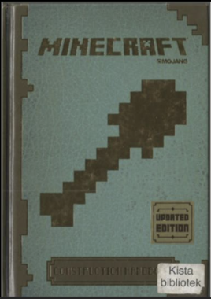

The Minecraft Construction Handbook: A Place of Inspiration
In 2013, Mojang releasedseveral handbooksto help new players better understand Minecraft's mechanics and the possibilities that came with its style of gameplay, later updating them in 2015. One of the two released was the “Minecraft Construction Handbook” (left), a 105-page handbook focused on providing some build ideas for players, such as houses, gardens, and bridges. Overall, the handbook provides a set of instructions to build a few specific basic buildings, which are helpful for players getting started as the images provide clear ideas of what each step should look like, as well as a final version of the model situation in the game, thus removing uncertainty with outcomes, materials, and planning. Additionally, it also hosts several examples from more experienced builders, inspiring new players to create as they like by making them realize the vast creative power the game provides.

To elaborate on the qualities of instruction sets, the book breaks down builds by major construction. As an example, in the “Wooden House” (right), Mojang broke down the build into 8 steps, each relating to a milestone in the build, such as creating the base and starting the roof. The pictures made it easier for me to follow along as I could visually compare my progress with theirs. They also explained why some steps were done, which helped me make sure I didn't do something that I would regret later, like making the base too short and thus cramped later, as they warned. The only downside to their focus on visual milestones is that I didn't have exact measurements. How many blocks wide was their base? 4 by 5 blocks? 10 by 12? The most I could do was guess by counting the blocks in the images, but that also means I could have run into issues later if I had miscounted. Although this may not apply to everyone, trying to complete a build only to find that I made an avoidable mistake would have been disheartening. Overall, the encouraging style of the book's instructions makes it worth a try, in my opinion. Although it does not cover key concepts in building, like planning or color choice, it gives players the confidence to try their best and find out what they like on their own.

On that note, its examples from other players surely help in the “find your style” approach to building. After each instruction set, Mojang provides some example builds from creators in the community, such as an example garden and a massive palace (left)! First, the examples are not all equal. Some are simpler while others are grand, giving a more rounded idea of what building in Minecraft may look like, and thus reassuring that any level of creativity belongs in Minecraft. Personally, I think I can handle creating theexample garden made by HalfDemonAnbu, and that palace byFyreukleft me in awe!
Although the handbook does not go into detail about how it was built,it does throw in some tips the creator learned while making it. Leaving out the instructions might make the book much better than if they were included. As someone still trying to master building, seeing those grander builds is inspiring! I want to be able to build something like that, but I also question how. I need to plan and think it through first, thus making any result of it my own rather than a copy of someone else's. That feeling is the essence of building: to build as you are! However, I do wish they provided more instructional sets. Inspiration is just as wonderful as guidance is.
In summation, when it comes to inspiring one's inner creator, this book gets the job done. Its instructions are visually helpful and paced well, making them easier for a new player to follow. Without taking away from those sets, the book's examples also do well to inspire one to build grand and as they see beautiful without hinting at what beautiful can be, fueling players to truly enjoy their creative processes. However, the book still lacks specificity in places where it could have been easily added, which can make the process of following their advice frustrating at times. Nonetheless, the joy the book can bring is well worth it. The pages really do fly by while having fun!